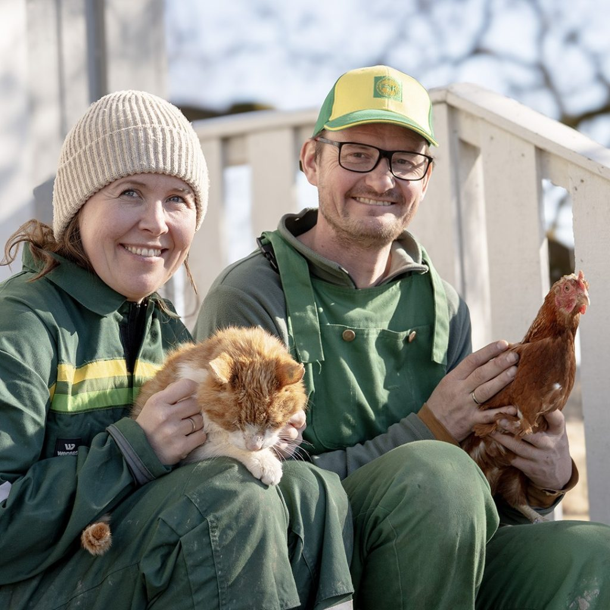

Kom for å trives
Et idyllisk småbruk ved bredden av Glomma – der naturen, dyrene og menneskene møtes.

Velkommen til vårt småbruk ved bredden av Glomma! Vi ønsker velkommen til en genuin gårdsopplevelse for hele familien. Hos oss kan du delta i diverse aktiviteter, fra dyrestell til rolige naturopplevelser.
Gården eies og drives av oss, Espen og Cathrine. De siste årene har vi utviklet et bærekraftig gårdsbruk der både mennesker og dyr trives. Vårt mål er å skape et inkluderende sted hvor besøkende kan oppleve gleden ved gårdslivet, lære om dyrestell og nyte rolige omgivelser.
Fladmark gård er en sertifisert Inn på tunet-gård med tilrettelagte velferdstjenester for barn, unge og voksne.
Vandring med alpakkaer og geiter, guidet fisketur og gårdsbesøk. Opplev naturen på nært hold.
Les mer →Bursdag på gården – eller fagdag og teambuilding med kolleger. Vi skreddersyr dagen etter dine ønsker.
Les mer →Sertifiserte velferdstjenester på gården. Alternativ læringsarena, arbeidstrening og fritidstilbud.
Les mer →Egg fra beitehøns, kjøtt fra lykkelige geiter og honning fra våre bier – med mer!
Les mer →